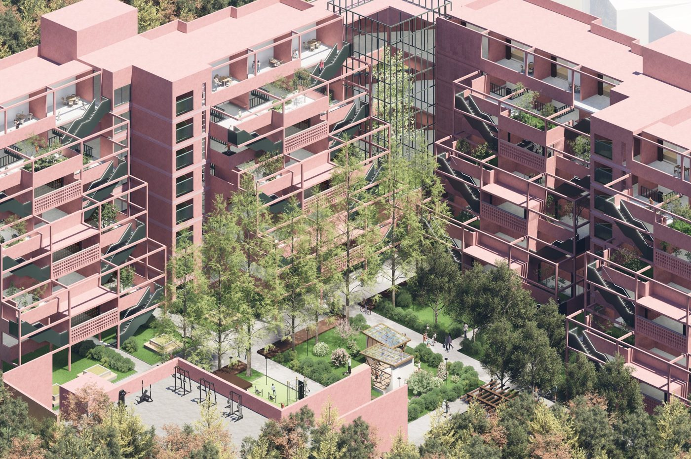
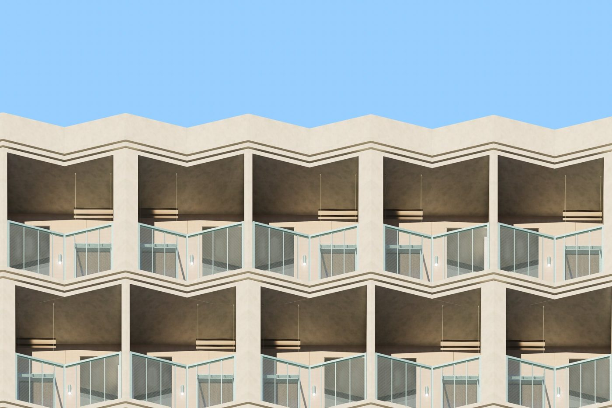
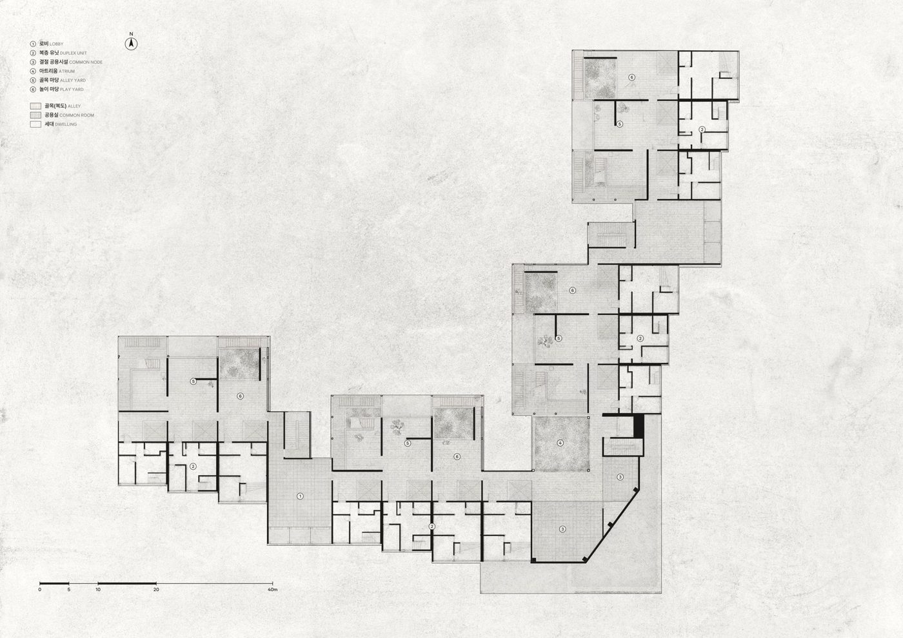
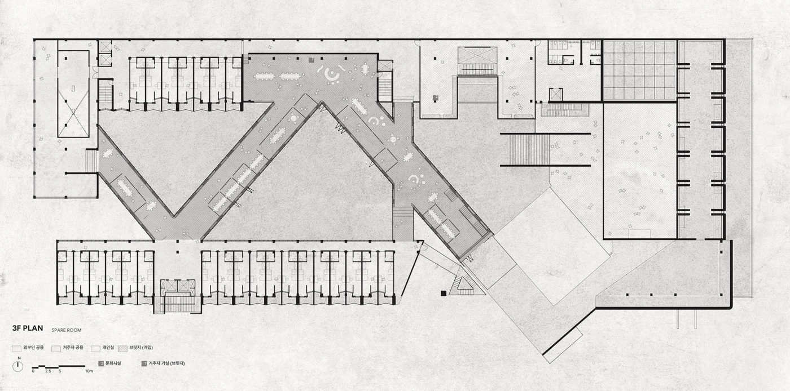
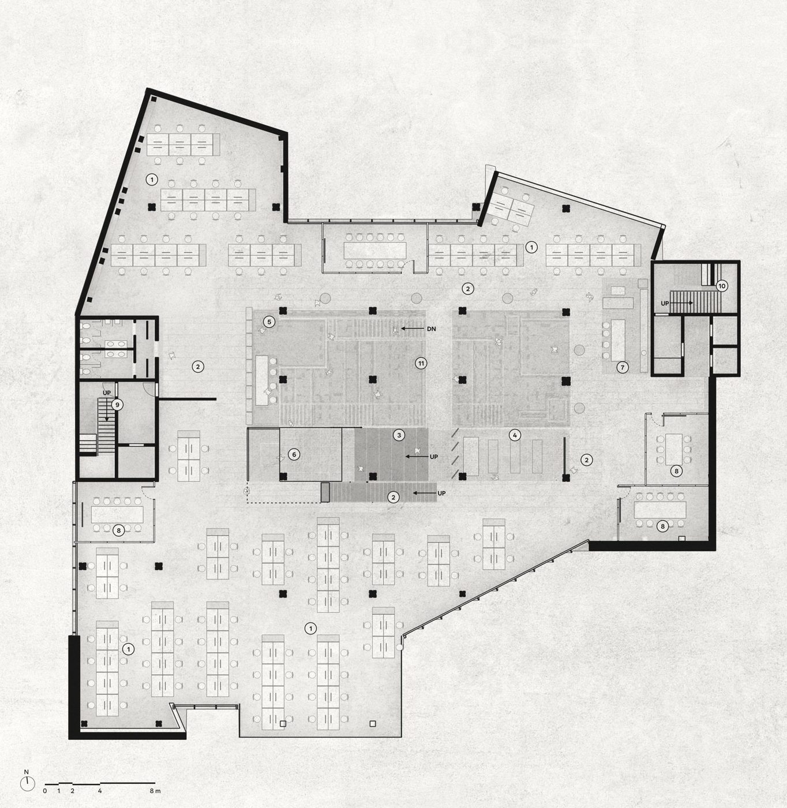
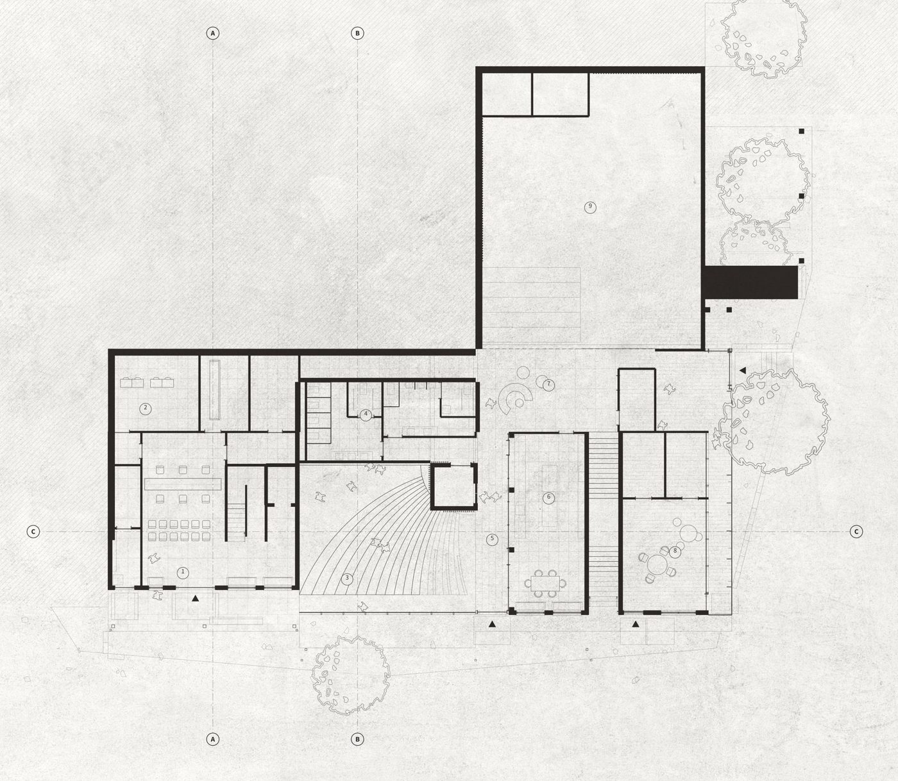
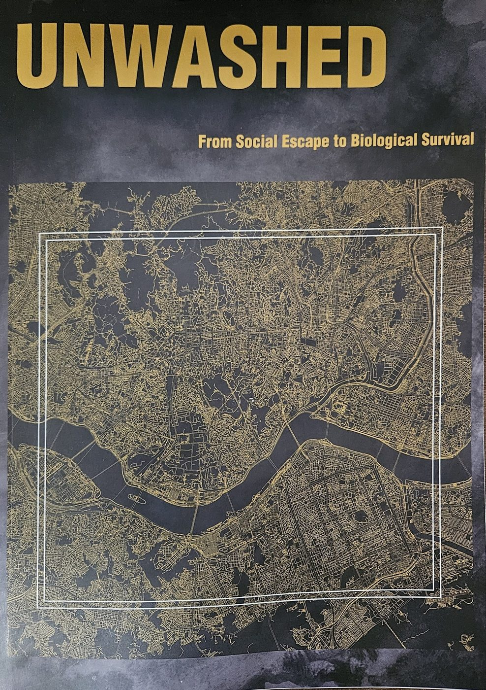
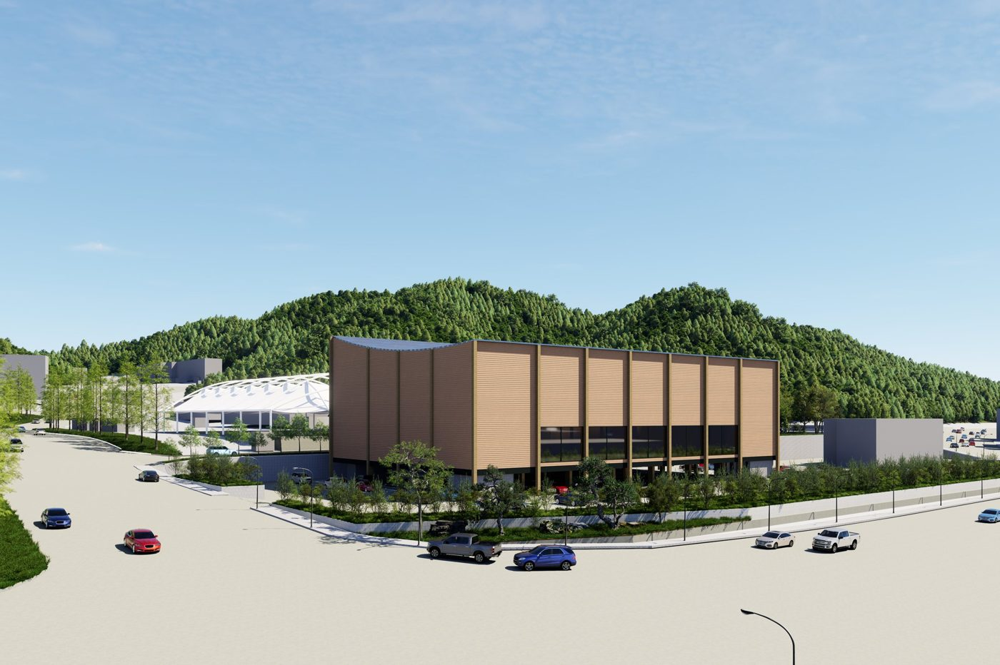
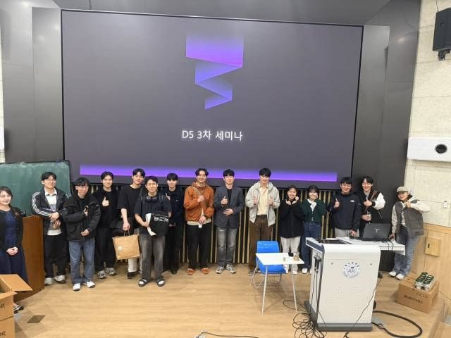
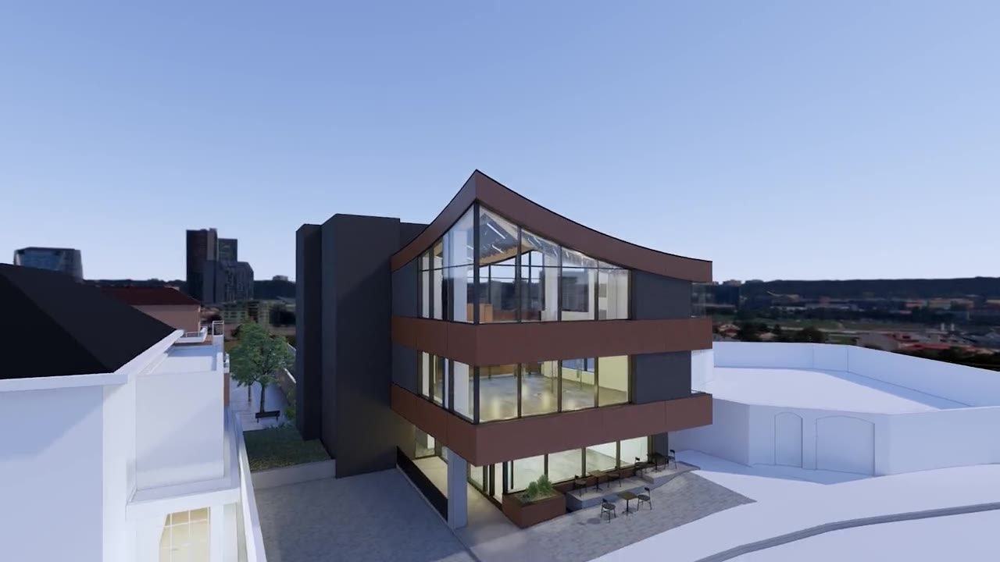

한승현 Seunghyun Han
Selected Works 2021–2026 · 홍익대학교 건축학과
대지와 사람들이 이미 가진 것에서 설계를 시작합니다. 집합주거, 공공공간, 흙건축, 컴퓨테이셔널 디자인에 관심을 두고 있습니다.
- 01MOSSCAPE OREUM졸업설계 · 집합주거 · 2026
 생존을 위해 지었으나, 우연히 면역 장치가 된 마을
생존을 위해 지었으나, 우연히 면역 장치가 된 마을 - 02ALLEY HOUSE4학년 · 집합주거 · 2025

확장되어 사라진 발코니를, 확장할 수 없는 복도로 옮긴다 - 03SPARE ROOM3학년 2학기 · 리노베이션 · 2023

함께 외로운 도시인들의 집 - 04IN-BETWEEN3학년 1학기 · 업무시설 · 2023
 서로 다른 도시적 스케일을 수용하며 골목과 대로를 연결한다
서로 다른 도시적 스케일을 수용하며 골목과 대로를 연결한다 - 05STOPOVER2학년 · 공공청사 · 2022
 정류장 앞, 용건이 없어도 들러 쉬어 가는 주민센터
정류장 앞, 용건이 없어도 들러 쉬어 가는 주민센터 - 06비어가는 마을공모전 · 빈집 · 어촌 재생 · 2026
 비어가는 마을, 사라진 것들이 들어오는 집
비어가는 마을, 사라진 것들이 들어오는 집

01 — 졸업설계 · 집합주거 · 2026MOSSCAPE OREUM
생존을 위해 지었으나, 우연히 면역 장치가 된 마을
프로젝트 보기 →
02 — 4학년 · 집합주거 · 2025ALLEY HOUSE
확장되어 사라진 발코니를, 확장할 수 없는 복도로 옮긴다
프로젝트 보기 →
03 — 3학년 2학기 · 리노베이션 · 2023SPARE ROOM
함께 외로운 도시인들의 집
프로젝트 보기 →
04 — 3학년 1학기 · 업무시설 · 2023IN-BETWEEN
서로 다른 도시적 스케일을 수용하며 골목과 대로를 연결한다
프로젝트 보기 →
05 — 2학년 · 공공청사 · 2022STOPOVER
정류장 앞, 용건이 없어도 들러 쉬어 가는 주민센터
프로젝트 보기 →
06 — 공모전 · 빈집 · 어촌 재생 · 2026비어가는 마을
비어가는 마을, 사라진 것들이 들어오는 집
프로젝트 보기 →Publish
출판 · 책자졸업전시 때 만든 책 두 권이에요. 표지를 누르면 실제 책처럼 펼쳐서 넘겨볼 수 있어요.

FROM CITY TO EARTH
졸업전시 책자 · 2026 · 책 펼쳐보기 →

UNWASHED
졸업전시 책자 · 2026 · 책 펼쳐보기 →
Practice & Activities
인턴 · 대외활동
D'EAU HANNAMSLA · 인턴 · 2026

MVSF in NEOM정림 디지털 아카데미 유닛 JAdU 2기 · 프로젝트 우수상 · 2025

문경시 체육시설 설계공모이진미 교수 RA · 2025

D5 Render 세미나공개 강연 · 홍익대학교 · 2025

삶것 건축사사무소인턴 · 모델링 · 렌더링 · 도면 · 2024
- 2025디어 건축사사무소인턴
- 2024–우동우 건축사사무소프리랜서